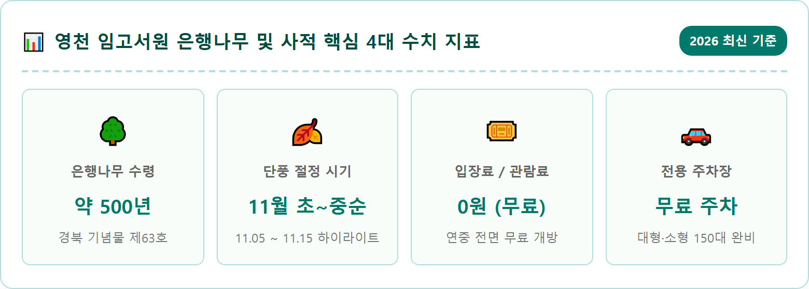
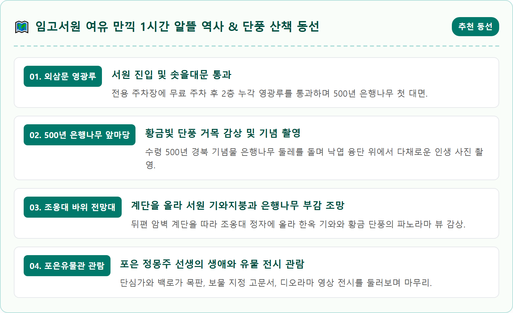
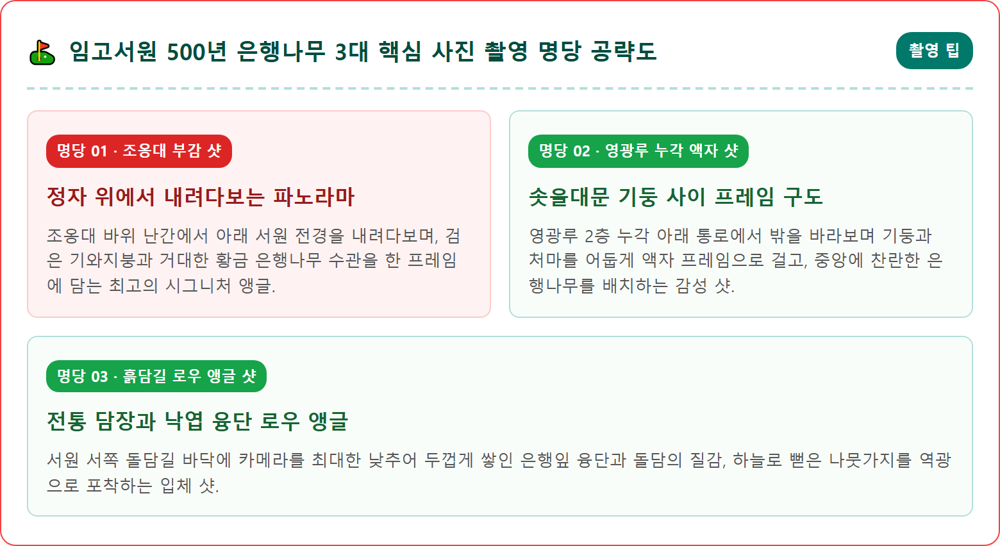
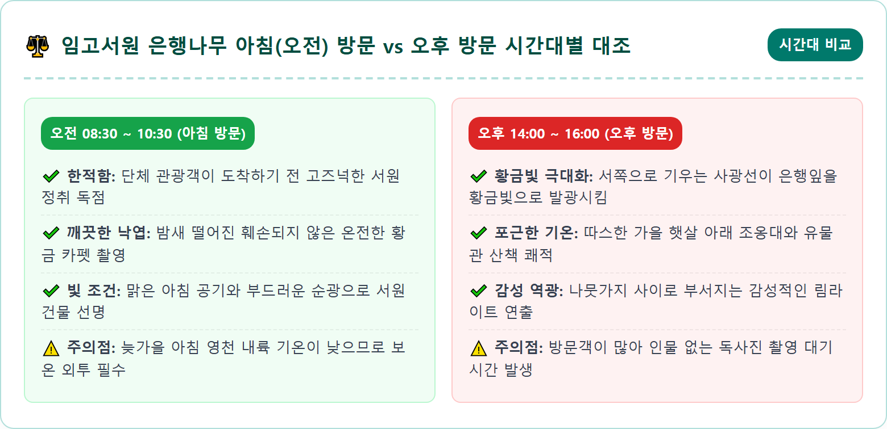
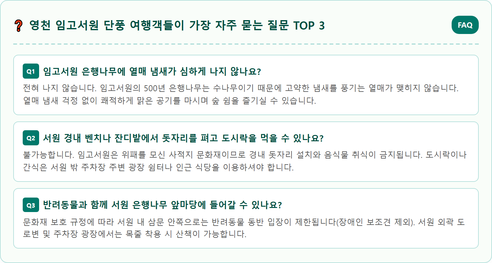

A magnificent 500-year-old giant ginkgo tree fully covered in brilliant golden yellow autumn leaves in front of traditional Korean Confucian academy Imgo Seowon in Yeongcheon Korea. Ancient weathered tree trunk with sweeping golden canopy dropping thick yellow carpet of ginkgo leaves on the ground. Elegant Korean traditional tiled roof hanok pavilions, wooden pillars, and stone walls surrounding the courtyard. Soft warm afternoon sunlight illuminating the golden foliage, peaceful historic atmosphere. High resolution photorealistic photography, 8k resolution, cinematic framing.

경상북도 영천시 임고면에 자리 잡은 임고서원(臨皐書院)은 고려 말 충절의 상징이자 동방이학(東方理學)의 시조로 추앙받는 포은 정몽주(鄭夢周, 1337~1392) 선생의 위패를 모신 유서 깊은 사액서원입니다. 조선 명종 8년(1553년)에 창건된 이후 수많은 유학자를 배출한 영남 사림의 중심지였으며, 가을이 되면 서원 앞마당을 가득 채우는 500년 수령의 은행나무 거목이 뿜어내는 황금빛 찬란함으로 전국 여행객들의 발길을 끌어모읍니다.
많은 은행나무 명소들이 도로변 가로수나 단순한 평지에 서 있는 것과 달리, 임고서원의 은행나무는 고풍스러운 조선 서원의 솟을대문, 흙담길, 기와지붕의 날렵한 처마 곡선과 완벽한 조화를 이룹니다. 바람이 불 때마다 수만 장의 노란 은행잎이 비처럼 흩날리며 서원 마당을 황금색 융단으로 덮어버리는 풍경은 보는 이의 넋을 잃게 만들 만큼 압도적인 감동을 자아냅니다.
무엇보다 서원 관람료와 주차 요금이 전액 무료로 운영되며, 주변으로 포은유물관과 충효관, 그리고 서원 뒤편 절벽 전망대인 조옹대(眺翁臺)가 잘 정비되어 있어 남녀노소 누구나 역사 교육과 가을 나들이를 동시에 즐길 수 있습니다. 2026년 가을, 임고서원 은행나무가 가장 아름답게 물드는 정확한 절정 시기와 놓쳐서는 안 될 핵심 포토존을 상세히 안내해 드립니다.
임고서원은 단순한 풍경 감상지를 넘어, 한국 성리학의 정통 계보를 잇고 고려 왕조를 향한 마지막 충절을 지키다 선죽교에서 순절한 포은 정몽주 선생의 정신문화가 살아 숨 쉬는 역사적 성지입니다. 정몽주 선생은 영천시 임고면 우항리에서 태어나 성장하였으며, 시서화에 능하고 외교와 유학 발전에 지대한 공헌을 세워 당대 최고의 유학자로 칭송받았습니다.
선생이 세상을 떠난 후 1553년 지역 유림들이 뜻을 모아 창건하였고, 명종 9년(1554년)에 국가로부터 편액과 서책, 토지를 하사받은 '사액서원'으로 공인되었습니다. 임진왜란 때 전소되는 비극을 겪었으나 1603년 현재의 위치로 자리를 옮겨 중건되었으며, 흥선대원군의 서원철폐령 때 훼철되었다가 1965년에 복원된 파란만장한 역사를 품고 있습니다.
현재 서원 경내에는 포은 선생의 위패를 봉안한 사당인 문충사(文忠祠)를 비롯하여 강당인 흥문당(興文堂), 누각인 영광루(榮光樓), 그리고 고려 공민왕이 하사한 친필 편액 등 귀중한 사적들이 원형 그대로 보존되어 있습니다. 서원의 단정한 건물 배치와 정갈한 마당은 은행나무의 화려한 색감과 어우러져 선비의 올곧은 기품과 깊은 품격을 여실히 드러냅니다.

임고서원 경내 서남쪽에 위풍당당하게 서 있는 은행나무는 1985년 10월 경상북도 기념물 제63호로 지정된 귀중한 자연유산입니다. 나무의 나이는 약 500년으로 추정되며, 높이는 약 20m, 가슴높이 둘레는 5.95m에 달해 성인 대여섯 명이 팔을 벌려 맞잡아야 겨우 안을 수 있는 엄청난 규모를 자랑합니다.
이 은행나무는 원래 임고서원이 임진왜란으로 불타기 전 옛 터에 심어져 있던 것을 서원을 현재 위치로 옮겨 지으면서 함께 이식한 것으로 전해집니다. 당시의 식목 기술로 이처럼 거대한 나무를 성공적으로 옮겨 뿌리내리게 한 것 자체가 선조들의 놀라운 지혜와 정성을 증명합니다. 오랜 풍파를 이겨낸 거친 나무껍질과 사방으로 힘차게 뻗어 나간 거대한 가지들은 한 마리 용이 꿈틀거리며 하늘로 승천하는 듯한 강인한 생명력을 뿜어냅니다.
수많은 은행나무 거목들이 열매 악취로 인해 접근하기 어려운 경우가 많지만, 임고서원의 은행나무는 수나무이기 때문에 고약한 냄새를 풍기는 열매가 맺히지 않는 커다란 축복을 지니고 있습니다. 덕분에 방문객들은 쾌적하고 맑은 공기 속에서 마음 놓고 나뭇가지 아래 머물며 벤치에 앉아 황금빛 낙엽 비를 즐길 수 있습니다.
영천 지역은 내륙 분지 지형 특성상 일교차가 크고 일조량이 풍부하여 단풍의 색감이 유난히 맑고 선명하게 우러납니다. 임고서원 은행나무의 단풍 주기는 10월 중순까지 짙은 녹색을 유지하다가, 10월 25일경부터 나무 윗부분 가지 끝부터 서서히 노란 기운이 감돌기 시작합니다.
완벽하게 황금빛으로 물드는 하이라이트 절정 기간은 **매년 11월 5일에서 11월 15일 사이**입니다. 이 시기에는 나무 전체가 빈틈없이 눈부신 노란색으로 변하며, 11월 10일 전후로는 나뭇잎이 바닥으로 일제히 낙하하기 시작하여 서원 앞마당 전체를 10cm 두께의 푹신한 황금빛 카펫으로 뒤덮습니다.
만약 잎이 풍성하게 매달린 웅장한 모습을 담고 싶다면 11월 첫째 주 주말(11월 7~8일경) 방문을 권장하며, 바닥에 깔린 황금 융단을 밟으며 영화 같은 낙엽 사진을 연출하고 싶다면 11월 둘째 주 평일을 노리는 것이 좋습니다. 11월 20일 이후에는 잎이 대부분 떨어지므로 늦지 않게 방문 일정을 잡으셔야 합니다.

임고서원을 방문했을 때 대부분의 관광객들이 은행나무 아래에서만 사진을 찍고 돌아가는 실수를 범하곤 합니다. 하지만 임고서원의 진정한 진면목을 발견할 수 있는 비밀 포인트는 서원 뒤편 깎아지른 절벽 바위 위에 우뚝 솟은 정자, **조옹대(眺翁臺)**입니다.
조옹대는 고려 말 포은 정몽주 선생이 벼슬을 잠시 내려놓고 고향에 머물 때 낚시를 즐기며 시를 읊었다는 전설이 깃든 유서 깊은 장소입니다. 서원 뒤편으로 잘 놓인 돌계단을 따라 3분 정도만 가볍게 숨을 헐떡이며 올라가면 정자가 자리하고 있습니다. 이곳 난간에 서는 순간 눈앞에 펼쳐지는 풍경은 가히 경이롭습니다.
먹물을 머금은 듯 정갈한 서원의 전통 기와지붕들이 고즈넉하게 도열해 있고, 그 한가운데에 500년 수령의 은행나무가 거대한 황금 폭포처럼 웅장하게 솟아 있는 모습을 완벽한 부감 앵글로 내려다볼 수 있습니다. 평지에서는 나뭇가지에 가려 한눈에 담을 수 없었던 거목의 압도적인 전체 수형이 한눈에 들어오며, 사진작가들이 새벽부터 삼각대를 펼치고 줄을 서는 최고의 출사 명소입니다.
은행나무와 조옹대 산책을 마쳤다면 서원 오른쪽에 자리 잡은 현대식 문화 전시관인 **포은유물관**과 **충효관**을 둘러볼 차례입니다. 포은유물관은 정몽주 선생의 숭고한 사상과 생애를 기리기 위해 설립된 박물관으로, 입장료가 무료임에도 국립박물관 못지않은 알찬 콘텐츠와 쾌적한 시설을 자랑합니다.
유물관 제1전시실에는 보물 제1110호로 지정된 '포은 정몽주 영정' 모사본과 선생의 친필 서명, 유묵, 그리고 문집인 『포은집(圃隱集)』 목판본 등 귀중한 문화재가 체계적으로 전시되어 있습니다. 특히 이방원의 하여가에 맞서 고려를 향한 불굴의 충절을 노래한 '단심가(丹心歌)'와 어머니 영천 이씨의 '백로가(白鷺歌)' 목판 인쇄본 앞에서는 누구나 깊은 숙연함을 느끼게 됩니다.
제2전시실에는 개성 선죽교 피살 당시의 긴박했던 상황을 실감 나게 재현한 디오라마 모형과 영상실이 마련되어 있어, 아이들과 함께 방문한 가족 단위 여행객들에게 훌륭한 역사 교육의 장이 됩니다. 충효관 1층에서는 탁본 체험과 다도 체험 등 전통문화 프로그램도 운영되어 관람의 재미를 한층 풍성하게 채워줍니다.

영천 임고서원은 시민과 국민 누구나 찬란한 역사 문화재를 누릴 수 있도록 **서원 경내와 포은유물관 관람료를 연중 전액 무료**로 개방하고 있습니다. 문화재 관리 차원에서 별도의 매표 절차가 없으므로 운영시간(오전 9시부터 오후 6시까지) 내에 자유롭게 출입할 수 있습니다.
주차 시설 역시 서원 정문 바로 앞에 대규모 전용 무료 주차장이 완비되어 있습니다. 대형 관광버스 15대와 승용차 150대 이상을 여유롭게 수용할 수 있으며, 주차비는 전액 무료입니다. 단풍이 절정을 이루는 11월 주말에는 전국 각지에서 관광버스가 몰려들지만, 안내 요원들이 교통 정리를 신속하게 진행하여 입출차가 원활합니다.
서원 입구 광장에는 깨끗하게 관리되는 남녀 장애인 겸용 화장실과 문화관광해설사의 집이 자리하고 있습니다. 오전 10시부터 오후 5시까지 문화관광해설사가 상주하여 사전 신청 시 깊이 있는 역사 해설을 무료로 들을 수 있습니다. 서원 길 건너편에는 전통 대추차와 식혜를 파는 한옥 찻집과 편의점 등 휴게 편의 시설이 잘 갖추어져 있습니다.
매년 11월이면 전국의 사진작가들이 영천 임고서원으로 총집결하는 데는 그만한 이유가 있습니다. 수령 500년의 거목이 만들어내는 압도적인 프레임 덕분에 카메라를 어디에 들이대도 작품이 완성됩니다. 작가들이 입을 모아 추천하는 제1의 명당은 앞서 소개한 **조옹대 절벽 위 부감 샷**입니다. 서원의 검은 기와 능선 너머로 거대한 황금 수관이 폭발하듯 펼쳐지는 모습은 드론 없이도 항공 촬영 같은 웅장함을 선사합니다.
제2의 명당은 **영광루 2층 누각 아래 통로 프레임 샷**입니다. 솟을대문 안쪽 어두운 통로 그늘에 서서 문밖의 은행나무를 바라보면, 어두운 한옥 기둥과 처마가 천연 액자 프레임 역할을 하여 밝은 햇살을 받아 빛나는 노란 은행나무가 한층 더 극적으로 돋보입니다. 인물 사진을 찍을 때 누각 기둥 사이에 서서 역광 실루엣을 살리면 영화 포스터 같은 분위기가 연출됩니다.
제3의 명당은 **서원 서편 담장 앞 낙엽 융단 로우 앵글 샷**입니다. 돌과 흙을 섞어 쌓은 전통 토석담 옆으로 은행잎이 무릎 높이까지 수북하게 쌓여 있는 지점에 스마트폰 카메라를 바닥에 바짝 밀착시켜 촬영해 보시기 바랍니다. 발끝에서부터 시작되는 노란 낙엽의 원근감과 하늘을 뒤덮은 은행나무 가지가 화면 가득 담기며 압도적인 가을 감성을 자랑합니다.
임고서원을 관람한 후 하루를 온전히 채울 수 있는 영천 가을 명소로는 자동차로 20분 거리에 위치한 **천년고찰 은해사(銀海寺)**와 보현산 드라이브 코스가 완벽한 짝을 이룹니다. 팔공산 동쪽 자락에 자리한 조계종 제10교구 본사 은해사는 가을 단풍이 아름답기로 정평이 나 있습니다. 특히 매표소에서 절 입구까지 이어지는 2km 구간의 '은해사 금포정(金浦亭) 숲길'은 300년 수령의 금강송과 활엽수 단풍이 어우러져 피톤치드를 듬뿍 마시며 걷기에 최적입니다.
조금 더 탁 트인 시야와 드라이브의 묘미를 원하신다면 해발 1,124m의 **보현산천문대**로 핸들을 돌려보시기 바랍니다. 굽이치는 산악 도로를 따라 올라가는 길목마다 오색 단풍이 물결치며, 정상에 오르면 보현산 능선을 따라 조성된 출렁다리와 전망 덱에서 영천과 청송 일대의 산세를 한눈에 내려다볼 수 있습니다. 맑은 가을밤이면 은하수가 쏟아지는 별빛 명소로도 명성이 자자합니다.
미식 탐방으로는 영천 공설시장 내 70년 전통의 **영천 곰탕 골목**을 추천합니다. 가마솥에서 사흘 밤낮을 우려낸 진하고 구수한 한우 소머리곰탕 한 그릇은 쌀쌀해진 가을 날씨에 얼어붙은 몸을 든든하고 따뜻하게 녹여줍니다. 찬란한 황금빛 은행나무와 천년 고찰의 고즈넉함, 그리고 보현산의 웅장한 가을 파노라마까지 한 번에 만끽할 수 있는 영천 가을 나들이를 적극 추천합니다.
